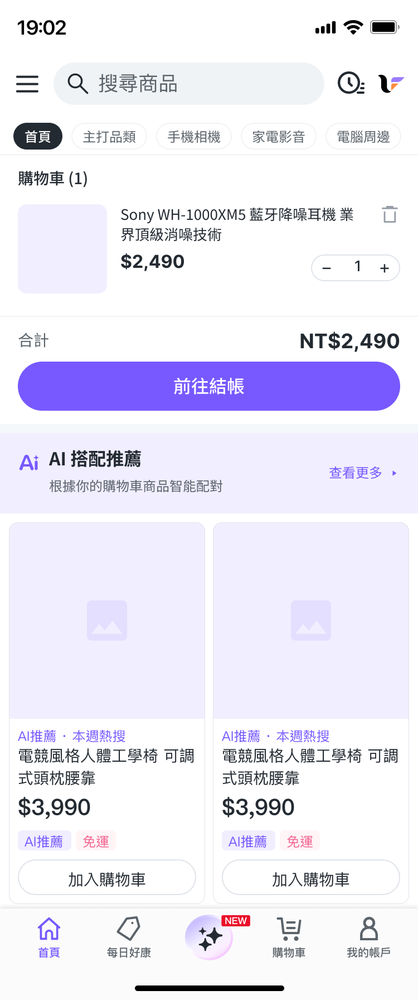

20
26
2026
AI 在 Figma 建置時，設計師這樣做品質確認
Brief 寫好了，旅程結構也對了——但 AI 在 Figma 動手建置的過程中， 設計師並不是坐著等結果的那個人。三道關卡、六種常見偏差， 是讓 AI 建置結果達到提案品質的品質確認系統。
Brief 送出去之後，Claude Code 開始在 Figma 裡一層一層建置你的設計概念。 這個階段最常見的誤區是：設計師以為工作已經結束，等著看最終結果。 實際上，建置過程中的設計師角色是「驗收者」，而不是「等待者」。
「AI 建置的品質不是由最後一張截圖決定的，而是由你在對的節點介入確認決定的。晚發現的偏差，代價是重建整個段落。」
這篇文章介紹一套結構化的品質確認系統：三道驗收關卡告訴你在哪些節點截圖確認， 六種常見偏差告訴你看哪些細節，完整 QA Checklist 告訴你確認什麼。 最後的實際確認範例展示如何把觀察到的偏差轉成有效的修正指令。
等 AI 建置完全部畫面才做確認，是最昂貴的做法。 如果 Token 引用在第一個畫面就出錯，之後建置的所有畫面都會繼承同樣的錯誤， 最後你需要一次修正四個畫面而不是一個。 品質確認必須嵌入建置過程，而不是在最後。
品質確認節點 · 嵌入建置流程
三道關卡對應 AI 建置的三個自然節點： 結構搭建完成後（有畫面骨架但還沒有細節）， 元件和 Token 套用後（有視覺但內容可能還是佔位符）， 以及最終內容填入後（可以做整體判斷）。 每道關卡有不同的確認重點，不需要每次都做全面掃描。
如何指示截圖節點
在旅程 Brief 末尾加上：「每完成一個畫面的 Layer 2（元件套用）後截圖，我確認後再繼續下一個畫面。」 這讓你保有介入空間，而不是收到完成品後才發現整段旅程需要重建。
三道關卡不是三次全面掃描，而是三個不同焦點的快速確認。 每道關卡的確認時間約 2–3 分鐘，重點清晰，避免每次都重複確認相同的項目。
結構關卡（Structure Gate）
時機：AI 建立畫面骨架後，尚未套用元件時
Section 數量與順序：Brief 裡定義的 Section 是否全部出現？順序是否正確？
畫面高度合理：在 375px 寬度下，關鍵 CTA 是否在第一屏可見？（不需捲動）
旅程連貫性（多畫面）：與前一個畫面的 Exit 對應到這個畫面的 Section 起點是否合理？
Token 關卡（Token Gate）
時機：元件和顏色套用後，內容可能仍是佔位符
視覺 OK ≠ 實作 OK
G2 的確認項目分兩種：截圖可見——用眼睛看截圖就能判斷；Layer 面板——視覺上看不出差別，必須在 Figma 點開 Layer 屬性才能核對。purple-100 Token 和 hardcode #e4deff 顏色一模一樣；Image Fallback icon 只有圖片載入失敗才顯示——這兩項靠截圖確認不了。
Token 色彩引用Layer 面板
purple-100 Token 和 hardcode hex 值視覺上一模一樣。需在 Figma Layer 屬性欄確認顏色來源顯示 Token 名稱，而非 hex 值。
沒有 hardcode 色值Layer 面板
特別檢查背景色、按鈕色。視覺正確不代表引用正確，必須進 Layer 面板查看色值來源。
Component Variant（Image Fallback、Button）Layer 面板
Image Fallback 只有圖片載入失敗才顯示，正常狀態截圖看不到；Button 的 Variant 屬性也需在元件屬性面板核對，不能靠外觀判斷。
Icon 語意正確性截圖可見
購物車 vs. 愛心 vs. 分享——Icon 的視覺語意可以直接從截圖辨認，這是 G2 裡少數靠眼睛就能確認的項目。
整體驗收關卡（Final Gate）
時機：真實內容填入後，畫面完成
視覺層次符合預期：Primary CTA 的視覺強度是否明顯高於其他元素？
真實內容無截斷：商品名稱、價格、文案是否完整顯示？有無意外的省略號或超出邊界？
跨畫面一致性（多畫面）：在旅程 Brief 中定義的一致性元素（商品名稱、特賣價）是否在每個畫面完全相同？
情感節拍畫面到位：旅程的情感高點畫面是否有明顯的視覺強調？（省下金額、確認動畫）
AI 建置偏差有固定的模式。給每種偏差一個名字，讓你在修正指令中能精準描述問題， 而不是用「這裡不對」讓 AI 猜測你的意思。
| 偏差類型 | 症狀描述 | 根本原因 | 確認關卡 |
|---|---|---|---|
| Token 降級 | 使用了 hex 值而非 Token 引用，顏色看似正確但無法主題切換 | Brief 中提供了 hex 值，或 AI 無法找到對應 Token | G2 |
| Variant 錯選 | Image Fallback 顯示空框輪廓而非實心圖示；Button 尺寸不符規範 | spec.md 對該元件的 Variant 說明不完整，或 AI 使用了預設值 | G2 |
| 層次壓縮 | Primary CTA 和次要按鈕視覺強度相近，使用者無法快速識別主要行動 | Brief 沒有明確說明 Primary / Secondary 的視覺差異 | G3 |
| Section 缺失 | Brief 中定義的某個 Section 沒有出現，或被合併進其他 Section | AI 判斷該 Section 與其他內容重複，自行省略 | G1 |
| 內容漂移 | 商品名稱、價格在不同畫面略有不同（如前頁寫「NT$2,490」後頁寫「$2490」） | 多畫面分批建置，AI 在不同畫面使用了略有差異的格式 | G3 |
| 情感節拍缺位 | 訂單確認頁與其他頁面視覺強度相同，缺少特別的慶祝感或強調元素 | 旅程 Brief 沒有明確指定情感節拍或給 AI 足夠的探索空間 | G3 |
最高頻率偏差
根據實際 Claude Code × Figma 協作經驗，Token 降級和Variant 錯選是最常見的偏差， 出現機率遠高於其他類型。每次建置後優先在 G2 關卡確認這兩項， 可以攔截 70% 以上的品質問題。
發現偏差後，很多設計師的直覺是重新發送一份更詳細的 Brief。 這通常是多餘的。有效的修正指令結構很簡單：① 指出位置 → ② 描述現狀 → ③ 指定修正方向。
位置要精確到 Section 層級
「頁面頂部的 Banner」比「首頁某個地方」清晰得多。 如果你在 Figma 裡能看到 Layer 名稱，直接用 Layer 名稱定位。 AI 能精確找到你指的位置，而不需要在整個畫面中猜測。
描述現狀，不要只說「不對」
「Image Fallback 圖示是空框」比「圖示不對」讓 AI 更快理解問題。 描述你看到的，不是描述你的感受。 「感覺不對」讓 AI 進入猜測模式，「Variant 顯示 Fill=False，應該是 Fill=True」讓 AI 直接修正。
修正方向給語意，不給技術規格
修正指令跟 Brief 寫作原則一樣：給語意方向，不給 hex 值和 px 數字。 「改為引用 Token：purple-100」是語意方向，「改為 #e4deff」是技術規格—— 後者可能再次產生 hardcode 偏差。
以下是整合三道關卡的完整 QA Checklist，可以直接貼入 Claude Code 的指令中，讓 AI 自行執行每個截圖節點的自我確認。 每個項目標注確認方式：截圖代表可從截圖直接目視判斷；Layer 面板代表視覺上看不出差別，需在 Figma 開啟 Layer 或元件屬性面板核對。
以下是針對「購物車 × AI 搭配推薦」畫面（Part 1 範例）執行 G2 Token 關卡的實際確認流程， 展示如何從截圖觀察、識別偏差、到發出精準修正指令。

Figma 建置結果截圖（images/screenshot-cart.png）
G2 Token Gate · 視覺確認要點
從截圖可以直接觀察的兩個項目：
① AI 推薦 Section 背景色
視覺上呈現淡紫色（purple-100），Figma Layer 屬性顯示 Token 名稱而非 hex 值——Token 引用正確。
② 結帳 CTA 在第一屏可見
「前往結帳」按鈕不需捲動即可看到，符合 Brief 約束「固定：結帳 CTA 必須在第一屏可見」。
▲ 購物車頁 G2 關卡截圖。AI 推薦背景色與 CTA 位置可由截圖直接確認。Token 引用與 Image Fallback Variant 這兩項，截圖看不出來——purple-100 Token 和 hardcode hex 值視覺上一模一樣；Fallback icon 只有圖片載入失敗才出現，正常狀態下不可見。這兩項要進 Figma Layer 面板點開元件屬性才能確認。
G2 確認流程示範
| 確認項目 | 觀察結果 | 判斷 |
|---|---|---|
| AI 推薦區塊背景色 | 淡紫色，視覺上接近 purple-100，Layer 屬性顯示 Token 名稱 | ✓ 通過 |
| 結帳 CTA 位置 | 「前往結帳」按鈕在第一屏可見，不需捲動，符合 Brief 固定約束 | ✓ 通過 |
| Button Token | 「前往結帳」按鈕背景色 Layer 屬性顯示 Token 名稱，非 hardcode | ✓ 通過（Layer 確認） |
| Icon 語意 | AI 推薦 Section 的 header icon 顯示為星型（推薦語意），符合 Brief 說明 | ✓ 通過 |
| Image Fallback Variant | 截圖中商品圖正常顯示，Fallback icon 不會出現（只有圖片載入失敗才顯示）。需在 Figma 點開元件屬性，確認 Variant = Fill=True | ✓ 通過（元件屬性確認） |
| 推薦商品卡背景 | product-card 背景使用了固定白色 #ffffff，而非 Token card-bg | ⚠ 需修正 |
系列總結
三篇指南構成完整的 AI × Figma 設計協作系統： Part 1 建立正確的 Brief 寫作認知（Design Token 邊界、三層資訊優先順序）； Part 2 擴展到多畫面旅程設計（Screen Inventory、Flow Logic）； Part 3 在建置過程中保持設計主控權（三道關卡、六種偏差）。 這套系統的核心：AI 負責執行，設計師負責判斷和驗收。